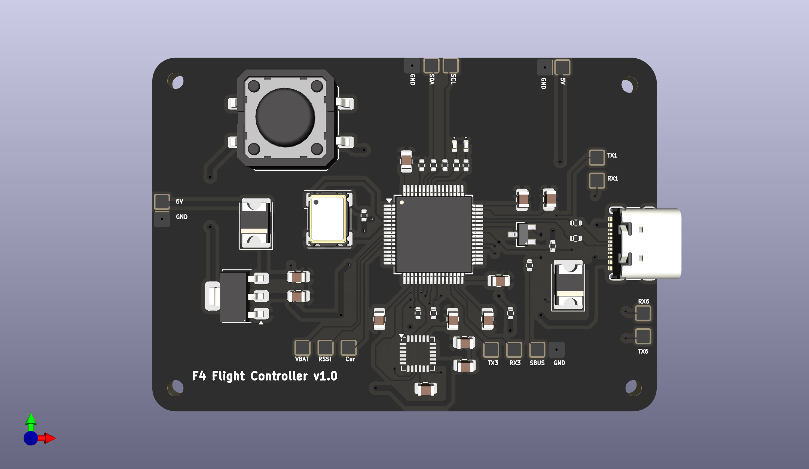
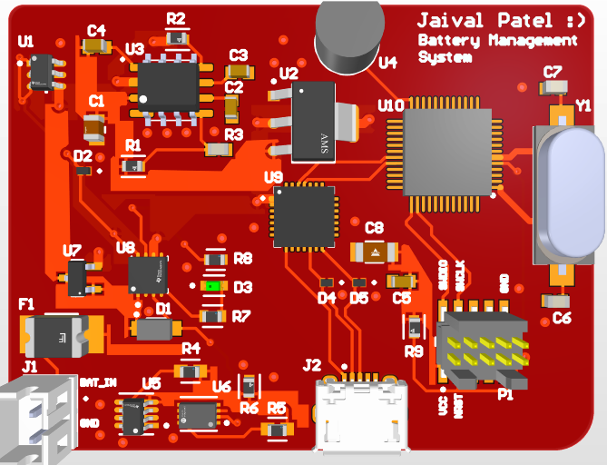
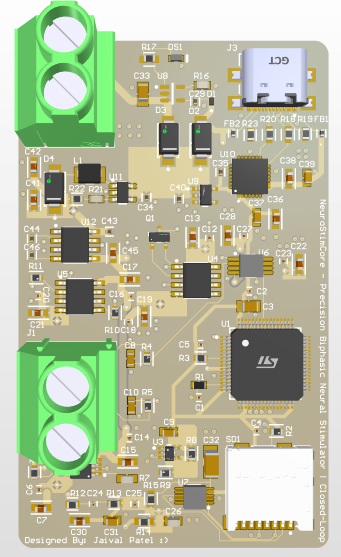
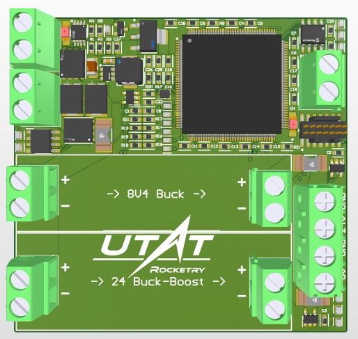
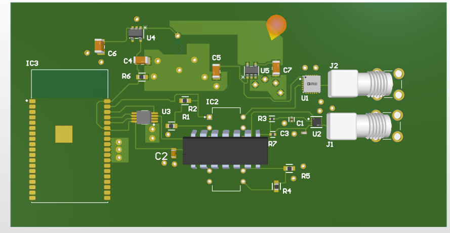
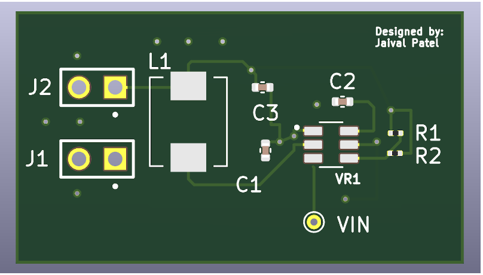

Systems Work
Hardware, Embedded Systems, and Tools.

F4 Flight Controller
A compact STM32F415 flight computer with MPU-6000 IMU, USB-C, dual-input power, and SBUS support for small drones.
Technical Report →

Battery Management System
Custom 3-rail BMS with battery monitoring, safe switching, and power integrity enhancements for embedded systems.
Technical Report →

NeuroStimCore
Real-time neural stimulation board with bipolar analog frontend, adaptive feedback control, precision current delivery, and STM32-based closed-loop actuation.
Technical Report →

Liquid Rocket Power Management Board
Power management board for avionics of the Discovery Liquid Rocketry at UTAT.
Technical Report →

Communication Board for RF Sensors
RF signal and communication board for wireless monitoring of microwave sensors at ISML.
Technical Report →

DC-DC Buck Converter
TPS561208DDCR breakout board for compact embedded power conversion.
Technical Report →